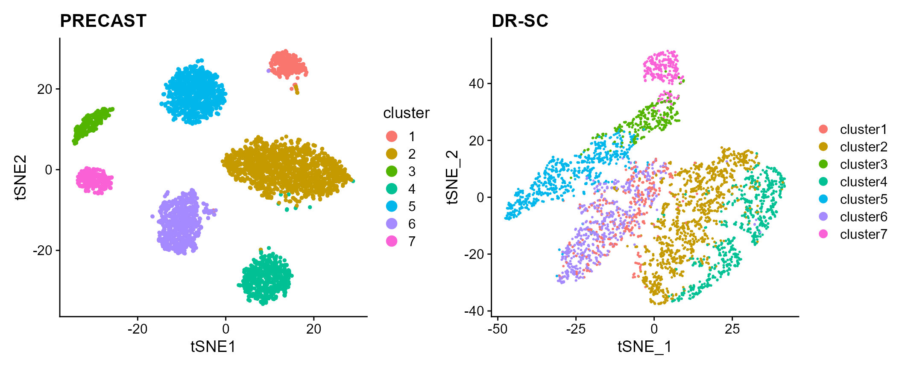
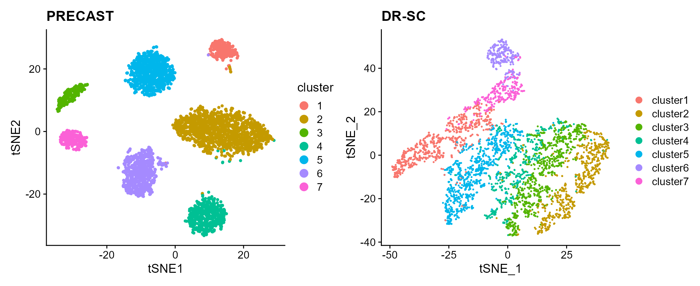

vignettes/PRECAST.DLPFC.Rmd
PRECAST.DLPFC.RmdThis vignette introduces the PRECAST workflow for the analysis of single spatial transcriptomics dataset. The workflow consists of three steps
We demonstrate the use of PRECAST to one human dorsolateral prefrontal cortex Visium data that are here, which can be downloaded to the current working path by the following command:
githubURL <- "https://github.com/feiyoung/PRECAST/blob/main/vignettes_data/dlpfc_151672.rda?raw=true"
download.file(githubURL, "dlpfc_151672.rda", mode = "wb")Then load to R
load("dlpfc_151672.rda")The package can be loaded with the command:
First, we view the the spatial transcriptomics data with Visium platform.
dlpfc_151672 ## a list including two Seurat object
#> An object of class Seurat
#> 33538 features across 4015 samples within 1 assay
#> Active assay: RNA (33538 features, 0 variable features)Create a PRECASTObj object to prepare for PRECAST models.
library(PRECAST)
preobj <- CreatePRECASTObject(seuList = list(dlpfc_151672))
## check the number of genes/features after filtering step
preobj@seulist
#> [[1]]
#> An object of class Seurat
#> 2000 features across 4015 samples within 1 assay
#> Active assay: RNA (2000 features, 2000 variable features)
## Add adjacency matrix list for a PRECASTObj object to prepare for PRECAST model fitting.
PRECASTObj <- AddAdjList(preobj, platform = "Visium")
## Add a model setting in advance for a PRECASTObj object. verbose =TRUE helps outputing the
## information in the algorithm.
PRECASTObj <- AddParSetting(PRECASTObj, Sigma_equal = FALSE, coreNum = 1, maxIter = 30, verbose = TRUE)For function PRECAST, users can specify the number of clusters \(K\) or set K to be an integer vector by using modified BIC(MBIC) to determine \(K\). Here, we use user-specified number of clusters.
### Given K
PRECASTObj <- PRECAST(PRECASTObj, K = 7)
#> fitting ...
#>
|
| | 0%
|
|=================================== | 50%
|
|======================================================================| 100%
#> variable initialize finish!
#> predict Y and V!
#> diff Energy = 11.310713
#> Finish ICM step!
#> iter = 2, loglik= -2014176.625000, dloglik=0.999062
#> predict Y and V!
#> diff Energy = 25.666907
#> Finish ICM step!
#> iter = 3, loglik= -1999002.625000, dloglik=0.007534
#> predict Y and V!
#> diff Energy = 67.481871
#> Finish ICM step!
#> iter = 4, loglik= -1992999.625000, dloglik=0.003003
#> predict Y and V!
#> diff Energy = 45.377369
#> Finish ICM step!
#> iter = 5, loglik= -1989765.875000, dloglik=0.001623
#> predict Y and V!
#> diff Energy = 47.314060
#> Finish ICM step!
#> iter = 6, loglik= -1987846.250000, dloglik=0.000965
#> predict Y and V!
#> diff Energy = 30.991801
#> Finish ICM step!
#> iter = 7, loglik= -1986627.750000, dloglik=0.000613
#> predict Y and V!
#> diff Energy = 27.798633
#> Finish ICM step!
#> iter = 8, loglik= -1985805.125000, dloglik=0.000414
#> predict Y and V!
#> diff Energy = 21.695250
#> Finish ICM step!
#> iter = 9, loglik= -1985221.625000, dloglik=0.000294
#> predict Y and V!
#> diff Energy = 26.017850
#> Finish ICM step!
#> iter = 10, loglik= -1984794.000000, dloglik=0.000215
#> predict Y and V!
#> diff Energy = 17.907212
#> Finish ICM step!
#> iter = 11, loglik= -1984456.375000, dloglik=0.000170
#> predict Y and V!
#> diff Energy = 19.639638
#> Finish ICM step!
#> iter = 12, loglik= -1984194.875000, dloglik=0.000132
#> predict Y and V!
#> diff Energy = 27.240274
#> Finish ICM step!
#> iter = 13, loglik= -1983991.875000, dloglik=0.000102
#> predict Y and V!
#> diff Energy = 20.994092
#> Finish ICM step!
#> iter = 14, loglik= -1983821.375000, dloglik=0.000086
#> predict Y and V!
#> diff Energy = 22.842709
#> Finish ICM step!
#> iter = 15, loglik= -1983682.000000, dloglik=0.000070
#> predict Y and V!
#> diff Energy = 18.989097
#> Finish ICM step!
#> iter = 16, loglik= -1983562.875000, dloglik=0.000060
#> predict Y and V!
#> diff Energy = 18.534871
#> Finish ICM step!
#> iter = 17, loglik= -1983462.625000, dloglik=0.000051
#> predict Y and V!
#> diff Energy = 22.260116
#> Finish ICM step!
#> iter = 18, loglik= -1983381.875000, dloglik=0.000041
#> predict Y and V!
#> diff Energy = 19.758281
#> Finish ICM step!
#> iter = 19, loglik= -1983310.500000, dloglik=0.000036
#> predict Y and V!
#> diff Energy = 18.436015
#> Finish ICM step!
#> iter = 20, loglik= -1983248.625000, dloglik=0.000031
#> predict Y and V!
#> diff Energy = 18.088786
#> Finish ICM step!
#> iter = 21, loglik= -1983193.750000, dloglik=0.000028
#> predict Y and V!
#> diff Energy = 21.813398
#> Finish ICM step!
#> iter = 22, loglik= -1983148.875000, dloglik=0.000023
#> predict Y and V!
#> diff Energy = 18.449335
#> Finish ICM step!
#> iter = 23, loglik= -1983109.375000, dloglik=0.000020
#> predict Y and V!
#> diff Energy = 20.552492
#> Finish ICM step!
#> iter = 24, loglik= -1983073.625000, dloglik=0.000018
#> predict Y and V!
#> diff Energy = 18.782818
#> Finish ICM step!
#> iter = 25, loglik= -1983042.625000, dloglik=0.000016
#> predict Y and V!
#> diff Energy = 17.899873
#> Finish ICM step!
#> iter = 26, loglik= -1983013.250000, dloglik=0.000015
#> predict Y and V!
#> diff Energy = 18.506619
#> Finish ICM step!
#> iter = 27, loglik= -1982988.000000, dloglik=0.000013
#> predict Y and V!
#> diff Energy = 14.492426
#> Finish ICM step!
#> iter = 28, loglik= -1982961.000000, dloglik=0.000014
#> predict Y and V!
#> diff Energy = 15.545098
#> Finish ICM step!
#> iter = 29, loglik= -1982940.750000, dloglik=0.000010
#> predict Y and V!
#> diff Energy = 14.707213
#> Finish ICM step!
#> iter = 30, loglik= -1982921.750000, dloglik=0.000010Select a best model
## backup the fitting results in resList
resList <- PRECASTObj@resList
PRECASTObj <- selectModel(PRECASTObj)
ari_precast <- mclust::adjustedRandIndex(PRECASTObj@resList$cluster[[1]], PRECASTObj@seulist[[1]]$layer_guess_reordered)Integrate the reults into a Seurat object seuInt by the function IntegrateSpaData.
seuInt <- IntegrateSpaData(PRECASTObj, species = "Human")
seuInt
#> An object of class Seurat
#> 2000 features across 4015 samples within 1 assay
#> Active assay: PRE_CAST (2000 features, 0 variable features)
#> 2 dimensional reductions calculated: PRECAST, position
## The low-dimensional embeddings obtained by PRECAST are saved in PRECAST reduction slot.Save the spatial and tSNE scatter plots for clusters from PRECAST
p_sp1 <- SpaPlot(seuInt, item = "cluster", point_size = 3, combine = F)[[1]] + cowplot::theme_cowplot() +
ggplot2::ggtitle(paste0("PRECAST: ARI=", round(ari_precast, 2))) + ggplot2::xlab("row") + ggplot2::ylab("col")
seuInt <- AddTSNE(seuInt, n_comp = 2)
p_tsne <- dimPlot(seuInt, item = "cluster")
p_tsne <- p_tsne + cowplot::theme_cowplot() + ggplot2::ggtitle("PRECAST")Fit DR-SC and Plot the spatial and tSNE scatter plots for clusters
seu_drsc <- DR.SC::DR.SC(PRECASTObj@seulist[[1]], K = 7, verbose = T)
#> iter = 2, loglik= -2002904.672391, dloglik=0.999067
#> iter = 3, loglik= -1996051.387359, dloglik=0.003422
#> iter = 4, loglik= -1993768.714361, dloglik=0.001144
#> iter = 5, loglik= -1992506.770449, dloglik=0.000633
#> iter = 6, loglik= -1991720.506549, dloglik=0.000395
#> iter = 7, loglik= -1991192.142171, dloglik=0.000265
#> iter = 8, loglik= -1990821.840384, dloglik=0.000186
#> iter = 9, loglik= -1990552.529733, dloglik=0.000135
#> iter = 10, loglik= -1990338.927656, dloglik=0.000107
#> iter = 11, loglik= -1990159.206697, dloglik=0.000090
#> iter = 12, loglik= -1990008.264316, dloglik=0.000076
#> iter = 13, loglik= -1989895.302562, dloglik=0.000057
#> iter = 14, loglik= -1989797.797850, dloglik=0.000049
#> iter = 15, loglik= -1989716.045461, dloglik=0.000041
#> iter = 16, loglik= -1989646.588573, dloglik=0.000035
#> iter = 17, loglik= -1989586.688566, dloglik=0.000030
#> iter = 18, loglik= -1989535.301395, dloglik=0.000026
#> iter = 19, loglik= -1989491.672188, dloglik=0.000022
#> iter = 20, loglik= -1989447.173565, dloglik=0.000022
#> iter = 21, loglik= -1989403.488959, dloglik=0.000022
#> iter = 22, loglik= -1989360.376997, dloglik=0.000022
#> iter = 23, loglik= -1989326.518070, dloglik=0.000017
#> iter = 24, loglik= -1989300.499244, dloglik=0.000013
#> iter = 25, loglik= -1989279.631135, dloglik=0.000010
ari_drsc <- mclust::adjustedRandIndex(seu_drsc$spatial.drsc.cluster, PRECASTObj@seulist[[1]]$layer_guess_reordered)
p_tsne_drsc <- DR.SC::drscPlot(seu_drsc)
p_tsne_drsc <- p_tsne_drsc + ggplot2::ggtitle("DR-SC")
p_sp2 <- DR.SC::spatialPlotClusters(seu_drsc) + cowplot::theme_cowplot() + ggplot2::ggtitle(paste0("DR-SC ARI=",
round(ari_drsc, 2)))Compare the clustering performance of PRECAST and DR-SC.

Compare the tSNE visualiztion performance of PRECAST and DR-SC.
p_tsne + p_tsne_drsc
sessionInfo()
#> R version 4.1.2 (2021-11-01)
#> Platform: x86_64-w64-mingw32/x64 (64-bit)
#> Running under: Windows 10 x64 (build 22000)
#>
#> Matrix products: default
#>
#> locale:
#> [1] LC_COLLATE=English_Singapore.1252 LC_CTYPE=English_Singapore.1252
#> [3] LC_MONETARY=English_Singapore.1252 LC_NUMERIC=C
#> [5] LC_TIME=English_Singapore.1252
#> system code page: 936
#>
#> attached base packages:
#> [1] parallel stats graphics grDevices utils datasets methods
#> [8] base
#>
#> other attached packages:
#> [1] patchwork_1.1.1 sp_1.5-0 SeuratObject_4.1.0 Seurat_4.1.1
#> [5] PRECAST_1.3 gtools_3.9.2.2
#>
#> loaded via a namespace (and not attached):
#> [1] utf8_1.2.2 reticulate_1.25
#> [3] tidyselect_1.1.2 htmlwidgets_1.5.4
#> [5] grid_4.1.2 BiocParallel_1.28.3
#> [7] Rtsne_0.16 munsell_0.5.0
#> [9] ScaledMatrix_1.2.0 codetools_0.2-18
#> [11] ragg_1.2.2 ica_1.0-2
#> [13] future_1.26.1 miniUI_0.1.1.1
#> [15] spatstat.random_2.2-0 colorspace_2.0-3
#> [17] progressr_0.10.1 Biobase_2.54.0
#> [19] highr_0.9 knitr_1.37
#> [21] rstudioapi_0.13 stats4_4.1.2
#> [23] SingleCellExperiment_1.16.0 ROCR_1.0-11
#> [25] tensor_1.5 listenv_0.8.0
#> [27] labeling_0.4.2 MatrixGenerics_1.6.0
#> [29] GenomeInfoDbData_1.2.7 polyclip_1.10-0
#> [31] farver_2.1.0 rprojroot_2.0.3
#> [33] parallelly_1.32.0 vctrs_0.4.1
#> [35] generics_0.1.2 xfun_0.29
#> [37] ggthemes_4.2.4 R6_2.5.1
#> [39] GenomeInfoDb_1.30.1 ggbeeswarm_0.6.0
#> [41] rsvd_1.0.5 bitops_1.0-7
#> [43] spatstat.utils_2.3-1 cachem_1.0.6
#> [45] DelayedArray_0.20.0 assertthat_0.2.1
#> [47] promises_1.2.0.1 scales_1.2.0
#> [49] rgeos_0.5-9 beeswarm_0.4.0
#> [51] gtable_0.3.0 beachmat_2.10.0
#> [53] globals_0.15.0 goftest_1.2-3
#> [55] rlang_1.0.2 systemfonts_1.0.4
#> [57] splines_4.1.2 lazyeval_0.2.2
#> [59] spatstat.geom_2.4-0 yaml_2.3.5
#> [61] reshape2_1.4.4 abind_1.4-5
#> [63] httpuv_1.6.5 tools_4.1.2
#> [65] ggplot2_3.3.6 ellipsis_0.3.2
#> [67] spatstat.core_2.4-4 jquerylib_0.1.4
#> [69] RColorBrewer_1.1-3 BiocGenerics_0.40.0
#> [71] ggridges_0.5.3 Rcpp_1.0.8.3
#> [73] plyr_1.8.7 sparseMatrixStats_1.6.0
#> [75] zlibbioc_1.40.0 purrr_0.3.4
#> [77] RCurl_1.98-1.6 rpart_4.1.16
#> [79] deldir_1.0-6 viridis_0.6.2
#> [81] pbapply_1.5-0 cowplot_1.1.1
#> [83] S4Vectors_0.32.3 zoo_1.8-10
#> [85] SummarizedExperiment_1.24.0 ggrepel_0.9.1
#> [87] cluster_2.1.2 fs_1.5.2
#> [89] magrittr_2.0.3 GiRaF_1.0.1
#> [91] data.table_1.14.2 scattermore_0.8
#> [93] lmtest_0.9-40 RANN_2.6.1
#> [95] fitdistrplus_1.1-8 matrixStats_0.62.0
#> [97] mime_0.12 evaluate_0.15
#> [99] xtable_1.8-4 mclust_5.4.10
#> [101] IRanges_2.28.0 gridExtra_2.3
#> [103] compiler_4.1.2 scater_1.25.1
#> [105] tibble_3.1.7 KernSmooth_2.23-20
#> [107] crayon_1.5.1 htmltools_0.5.2
#> [109] mgcv_1.8-39 later_1.3.0
#> [111] tidyr_1.2.0 DBI_1.1.2
#> [113] formatR_1.11 MASS_7.3-55
#> [115] Matrix_1.4-0 cli_3.2.0
#> [117] igraph_1.3.2 DR.SC_3.0
#> [119] GenomicRanges_1.46.1 pkgconfig_2.0.3
#> [121] pkgdown_2.0.2 plotly_4.10.0
#> [123] scuttle_1.4.0 spatstat.sparse_2.1-1
#> [125] vipor_0.4.5 bslib_0.3.1
#> [127] XVector_0.34.0 CompQuadForm_1.4.3
#> [129] stringr_1.4.0 digest_0.6.29
#> [131] sctransform_0.3.3 RcppAnnoy_0.0.19
#> [133] spatstat.data_2.2-0 rmarkdown_2.11
#> [135] leiden_0.4.2 uwot_0.1.11
#> [137] DelayedMatrixStats_1.16.0 shiny_1.7.1
#> [139] lifecycle_1.0.1 nlme_3.1-155
#> [141] jsonlite_1.8.0 BiocNeighbors_1.12.0
#> [143] desc_1.4.0 viridisLite_0.4.0
#> [145] fansi_1.0.3 pillar_1.7.0
#> [147] lattice_0.20-45 fastmap_1.1.0
#> [149] httr_1.4.3 survival_3.2-13
#> [151] glue_1.6.2 png_0.1-7
#> [153] stringi_1.7.6 sass_0.4.1
#> [155] textshaping_0.3.6 BiocSingular_1.10.0
#> [157] memoise_2.0.1 dplyr_1.0.9
#> [159] irlba_2.3.5 future.apply_1.9.0